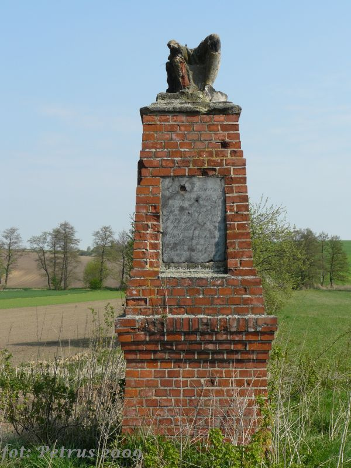

Jest to mała wieś położona w województwie Opolskim, powiecie Głubczyckim, gminie Kietrz
leży na tzw. polskich Morawach, czyli na obszarze dawnej diecezji ołomunieckiej. Pierwotnie należała do Margrabstwa Moraw nawet po wydzieleniu z niego księstwa opawskiego, które to co najmniej od końca XV wieku było już uważane za część Górnego Śląska, jednak miejscowość pozostała częścią Moraw jako część kietrzańskiej enklawy na Śląsku
źródło:WikipediaObelisk
W środku pola, pomiędzy Kietrzem a Kozłówkami, stoi ciekawy ceglany obelisk. Posiada tylko jedną tablicę, a widać, że były tam jeszcze inne. Na górze znajduje się pozostałość jakiejś figury - siedzącej postaci.y
Jak mówi legenda, około roku 1700 dwaj bracia, stoczyli w tym miejscu walkę na miecze o prawo do majątku po ojcu. Jeden z nich zmarł na miejscu, drugi chwilę później na skutek odniesionych ran. Dla upamiętnienia tego czynu, w roku 1710 ich ojciec kazał zbudować ten pomnik.
Żródło:eklploratorzy